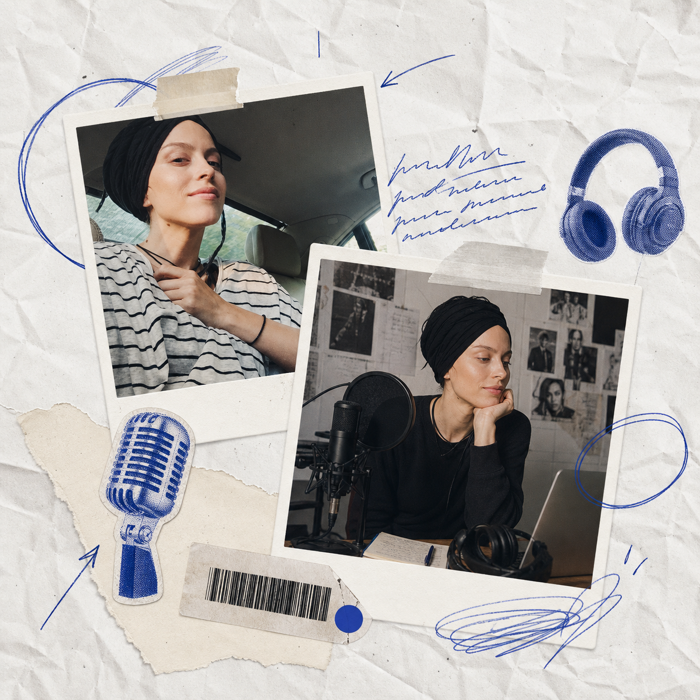

Media library · 24 выпуска · 12 тем
Подкасты с Олей Маркес
Чистый архив аудио и видеоразговоров с Олей Маркес: отношения, тело, тревога, материнство, AI, деньги, тантра, творчество и личная практика. Страница собрана так, чтобы быстро найти выпуск, тему, гостя или платформу.
Быстрые разделы
Быстрый поиск
Что ищем?
Ищи по названию выпуска, шоу, гостю, теме или ключевым словам из описания.
Popular topics
Темы архива
Latest episode
Свежий выпуск
Visual browse
Больше выпусков
Быстрый визуальный слой архива: свежие и важные разговоры, которые легче узнавать по обложке.
Start here
Редакторская подборка
Несколько точек входа для нового слушателя: AI, тело, отношения, тантра и творчество.
Separate show
Whippet podcast
Отдельная авторская лента про уиппетов: выбор щенка, поведение, переезды, курсинг, заводчики и жизнь с Чарли и Виски.
Audio